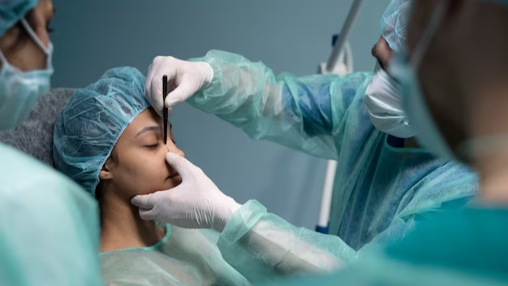

Undergoing eyelid surgery, also known as blepharoplasty, can be a life-changing decision. Whether you are seeking to enhance your appearance or address functional issues, finding the right surgeon is paramount to achieving successful results.
In the vibrant city of Melbourne, Australia, there are numerous surgeons offering eyelid surgery services. However, selecting the most suitable surgeon requires careful consideration and research. In this article, we will explore the key factors to keep in mind when choosing the right surgeon for your eyelid surgery Melbourne. By understanding these factors, you can ensure a positive surgical experience and attain the desired outcome for your eyelids.

If you're considering eyelid surgery in Melbourne to enhance your appearance or address functional issues, choosing the right surgeon is crucial. Eyelid surgery, also known as blepharoplasty, requires skill, precision, and expertise to achieve optimal results. With numerous surgeons practicing in Melbourne, it's essential to know what factors to consider when selecting the right professional for your procedure. Here are some key factors to guide your decision-making process.
First and foremost, you must ensure that the surgeon you choose is qualified and possesses the necessary credentials to perform eyelid surgery. Look for a surgeon who is board-certified and has undergone specialized training in oculoplastic or facial plastic surgery. This certification ensures that the surgeon has met rigorous standards and has the expertise required to perform eyelid surgery safely and effectively.
Experience plays a significant role in the success of any surgical procedure. Find out how many eyelid surgeries the surgeon has performed and inquire about their specialization in this specific area. An experienced surgeon will have a thorough understanding of the unique anatomy of the eyelids and will be adept at addressing both cosmetic and functional concerns.
Research the surgeon's reputation within the Melbourne community. Look for online reviews, testimonials, or personal recommendations from friends, family, or other healthcare professionals. A surgeon with a positive reputation and a track record of satisfied patients is more likely to provide you with the results you desire.
Schedule consultations with multiple surgeons to assess their communication skills and their ability to understand your goals and concerns. During these consultations, a reputable surgeon will take the time to listen to you, evaluate your specific needs, and provide honest and realistic expectations for the outcome of the procedure. Clear and open communication is crucial in establishing a trusting and collaborative relationship with your surgeon.
Ask to see before and after photos of previous eyelid surgery patients. This will give you a visual representation of the surgeon's work and help you gauge their ability to achieve the desired results. Look for consistency in their outcomes and ensure that their aesthetic approach aligns with your preferences.
Consider the facility where the surgery will take place. The surgical center should be accredited and equipped with modern technology to ensure your safety and comfort. Additionally, inquire about the anesthesia providers and the safety protocols in place to minimize any potential risks during the procedure.
While cost should never be the sole determining factor, it is an essential consideration. Discuss the total cost of the procedure during your consultations, including any associated fees for anesthesia, facility, and post-operative care. Additionally, inquire about the available financing options or payment plans that may make the procedure more affordable for you.
In summary, choosing the right surgeon for eyelid surgery in Melbourne is a crucial decision that should not be taken lightly. By taking the time to research, asking for referrals, and scheduling consultations, patients can make informed decisions about their healthcare providers. It's important to choose a surgeon who is experienced, skilled, and has a good track record of success. Patients should also feel comfortable with their surgeon, have a clear understanding of the procedure, and the expected outcomes.